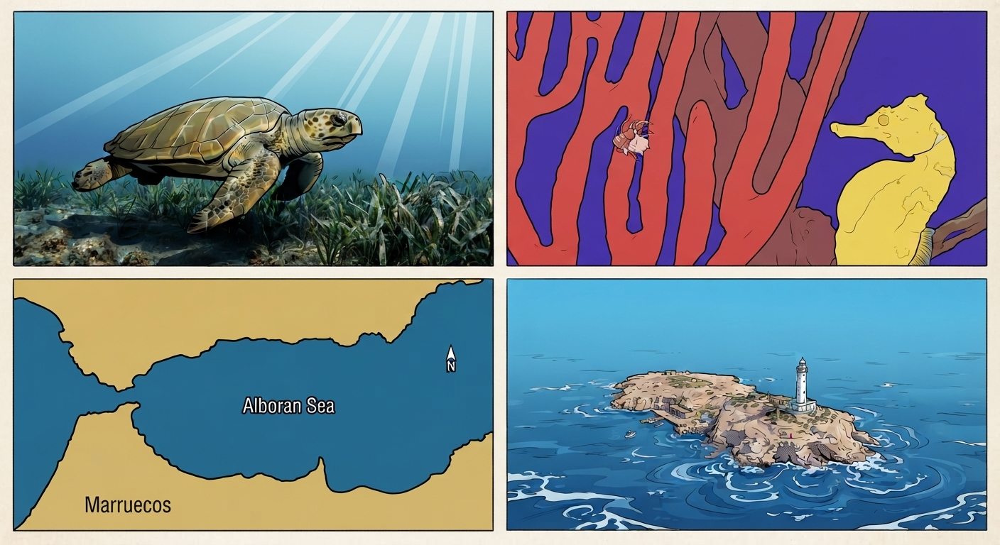

Puente Biológico y Frontera de Biodiversidad

1: Historia, Geología y Geopolítica del Mar

Históricamente, las costas de este mar han estado habitadas desde el origen de las primeras civilizaciones mediterráneas, sirviendo como un nexo comercial y estratégico clave para fenicios, romanos y púnicos. Geopolíticamente, su condición de paso obligado entre el océano Atlántico y el mar Mediterráneo a través del estrecho de Gibraltar lo convierte en un espacio geoestratégico de primer orden mundial, fundamental para el control de la navegación internacional, la seguridad marítima y la soberanía compartida entre Europa y el norte de África.
2: Fauna Marina y Especies Emblemáticas

Este mar alberga una rica biodiversidad que incluye poblaciones estables de cetáceos emblemáticos, así como áreas de vital importancia para la ruta migratoria y alimentación de la tortuga boba. Este ecosistema único se sustenta gracias a una compleja dinámica oceanográfica de emersión de nutrientes que estimula la productividad primaria, dando refugio también a valiosas comunidades bentónicas de corales de aguas profundas.
3: Flora y Especies Vegetales

La flora y vegetación marina del mar de Alborán destaca por su extraordinaria biodiversidad, albergando singulares "bosques" de algas laminariales, que son muy escasos en el resto del Mediterráneo. Asimismo, la zona sobresale por la presencia de extensos y bien conservados fondos de maërl formados por algas calcáreas, así como por complejas comunidades bentónicas en los arrecifes rocosos y el coralígeno.
4: Dinámica Oceanográfica y Corrientes

La dinámica oceanográfica del mar de Alborán se caracteriza por el continuo intercambio de masas de agua entre el océano Atlántico y el mar Mediterráneo a través del estrecho de Gibraltar. En este sistema destacan el agua superficial atlántica (ASW), que circula en dirección este, y el agua mediterránea intermedia (MIW). Este flujo de intercambio está regulado principalmente por las componentes de las mareas diurnas y semidiurnas, además de estar fuertemente condicionado por la batimetría y los agentes meteorológicos.
5: Retos de Conservación y Estado Actual

El estado actual del mar de Alborán se enfrenta a importantes retos de conservación impulsados por la intensa presión humana, la sobrepesca, el tráfico marítimo y la degradación de sus hábitats bentónicos. Para garantizar la recuperación y protección de su biodiversidad, las estrategias de gestión ambiental priorizan conciliar el uso sostenible de sus recursos con la preservación de espacios marinos protegidos.
BIBLIOGRAFÍA Y FUENTES CONSULTADAS:
Ministerio para la Transición Ecológica y el Reto Demográfico. MITECO (2025–2026).
Inventario de Espacios Naturales Protegidos: Espacio Marino de Alborán (Red Natura 2000). Gobierno de España. Disponible para consulta sobre cartografía marina y planes de gestión de hábitats prioritarios.
Proyecto LIFE+ INDEMARES.
Estudio y caracterización de los espacios marinos de valor ecológico en la demarcación marina suratlántica. Fundación Biodiversidad. Referencia utilizada para la distribución de especies de cetáceos, la tortuga boba (Caretta caretta) y los fondos coralígenos.
Instituto Español de Oceanografía (IEO-CSIC).
Dinámica oceanográfica, corrientes y circulación de masas de agua en el anticiclón de Alborán. Informes técnicos sobre la interacción entre el océano Atlántico y el mar Mediterráneo.
UICN (Unión Internacional para la Conservación de la Naturaleza).
Evaluación del estado de conservación de especies marinas amenazadas en el mar Mediterráneo occidental. Datos sobre poblaciones de Posidonia oceanica y coral rojo (Corallium rubrum).
Comisión Europea - Dirección General de Medio Ambiente.
Directrices de conservación para corredores migratorios y biodiversidad marina en aguas del Estrecho y Alborán. Marco regulatorio actualizado a 2026 para la protección frente al tráfico marítimo y la presión antrópica.
Tierno de Figueroa, J. M. Granada. 2026.
Cetáceos y fauna marina del litoral de Granada y el Mar de Alborán. Universidad de Granada.
Gofas, S., Goutayer, J., Luque, A. A., Salas, C., & Templado, J. (2011).
Espacio Marino de Alborán. Proyecto LIFE+ INDEMARES. Ed. Fundación Biodiversidad del Ministerio de Agricultura, Alimentación y Medio Ambiente.